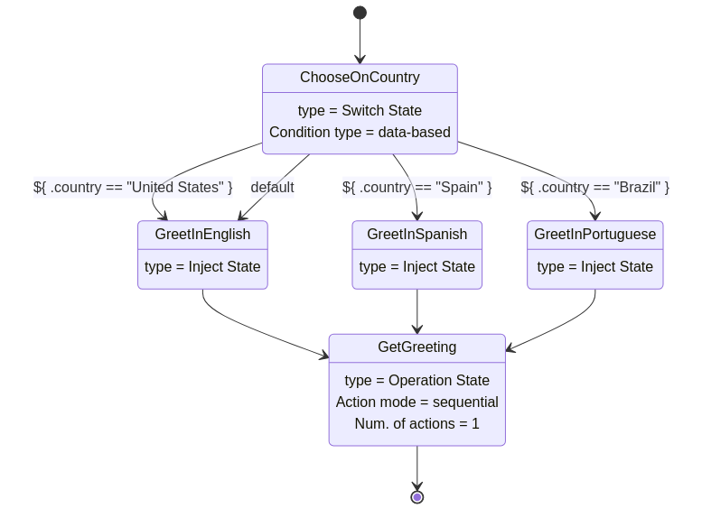
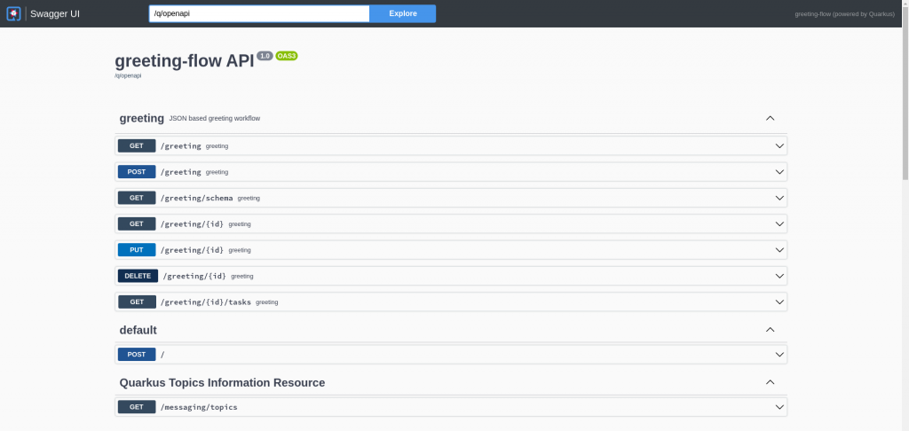

Getting Started with Service Calls and Serverless Workflow
Workflows are great for orchestrating services, functions or events. They provide out-of-the-box features to make your applications resilient, reliable, and simple.
But currently, each cloud vendor has its workflow solution. AWS has Step Functions, Google has Google Workflows, Microsoft has Azure Durable functions, and so on. The lack of a common way to define workflows becomes an issue when you need to migrate or host your applications on more than one cloud vendor. It also limits the potential for creating tools and infrastructures that support several platforms. This is what the Serverless Workflow specification addresses.
In this article, you’ll run through the steps to create and run a Serverless Workflow application from scratch using Kogito.
What is Serverless Workflow?
Serverless Workflow is an open-source and vendor-neutral specification that enables you to define declarative workflow models that orchestrate event-driven applications. The specification is a project hosted by the Cloud Native Computing Foundation (CNCF).
What is Kogito?
Kogito is an open-source runtime that implements the Serverless Workflow specification and empowers you to run your workflows on top of Quarkus. Besides the Serverless Workflow specification, Kogito also provides support to Business Automation in a cloud-native environment.
Fun Fact
Kogito’s name refers to “Cogito” as in “Cogito ergo sum” Latin for “I think, therefore I am.” The “K” in the name pays homage to Kubernetes, which is the foundation of this tool.
Prerequisites
- JDK 11+ installed with JAVA_HOME configured appropriately
- Apache Maven
- Quarkus CLI
To edit your workflows:
- Visual Studio Code with Red Hat Java Plugin and Red Hat Serverless Workflow Editor installed
What Are We Going to Create?
We’ll create a Serverless Workflow that returns a greeting based on a specified country and name. For instance, if we specify “John” as a name and “Brazil” as a country, our workflow should return a greeting in Portuguese like “Saudações do Serverless Workflow, John!”. Our workflow will have support for Brazil and Spain. If any other country is specified, it should return a greeting in English.
Our workflow will choose a language based on the specified country and call a remote service to retrieve the greeting based on the specified language and name.
See what our workflow should look like:

So now, let’s create our projects.
The Remote Service Project
This is the service that our workflow will invoke to retrieve the greeting. It comprises a simple Quarkus application with a single endpoint.
As creating Quarkus applications is not the focus of this article, you can just download the project from the repository.
Creating the Serverless Workflow Project
Run the following command in a terminal window to create the project skeleton:
quarkus create app -x=kogito-quarkus-serverless-workflow,quarkus-container-image-jib,quarkus-resteasy-reactive-jackson,quarkus-smallrye-openapi com.acme:greeting-flow:1.0
com.acme, greeting-flow and 1.0 are respectively the group id, artifact id, and version of your project.
This command will create a Maven Quarkus project in the greeting-flow directory with all the required Kogito dependencies.
Next, to make sure everything is working fine, try to compile the project with:
quarkus build
If the build completes successfully, you’re ready to create your first workflow.
Creating Your First Workflow
Create a file named greeting.sw.json in the src/main/resources directory with the following content:
{
"id": "greeting",
"version": "1.0",
"specVersion": "0.8",
"name": "Greeting workflow",
"description": "JSON based greeting workflow",
"start": "ChooseOnCountry",
"functions": [
{
"name": "getGreetingFunction",
"operation": "openapi.yml#getGreeting"
}
],
"states": [
{
"name": "ChooseOnCountry",
"type": "switch",
"dataConditions": [
{
"condition": "${ .country == "United States" }",
"transition": "GreetInEnglish"
},
{
"condition": "${ .country == "Spain" }",
"transition": "GreetInSpanish"
},
{
"condition": "${ .country == "Brazil" }",
"transition": "GreetInPortuguese"
}
],
"defaultCondition": {
"transition": "GreetInEnglish"
}
},
{
"name": "GreetInEnglish",
"type": "inject",
"data": {
"language": "English"
},
"transition": "GetGreeting"
},
{
"name": "GreetInSpanish",
"type": "inject",
"data": {
"language": "Spanish"
},
"transition": "GetGreeting"
},
{
"name": "GreetInPortuguese",
"type": "inject",
"data": {
"language": "Portuguese"
},
"transition": "GetGreeting"
},
{
"name": "GetGreeting",
"type": "operation",
"actions": [
{
"name": "getGreeting",
"functionRef": {
"refName": "getGreetingFunction",
"arguments": {
"name": "${ .name }",
"language": "${ .language }"
}
}
}
],
"stateDataFilter": {
"output": "${ {greeting: .greeting} }"
},
"end": true
}
]
}
You can use Visual Studio Code with Red Hat Java Plugin and Red Hat Serverless Workflow Editor extensions installed to edit and have a graphic representation of your workflow, like the one we saw in the previous section.
NOTE: In our workflow, we used several expressions, like "condition": "${ .country == "United States" }" and "output": "${ {greeting: .greeting} }". To know more about that, check out this article about Serverless Workflow Expressions.
As we’re going to invoke a remote service, we need an OpenAPI document that defines that service. You can get it from here and place it in the src/main/resources directory.
"functions": [
{
"name": "getGreetingFunction",
"operation": "openapi.yml#get"
}
],
In that function, we defined the operation to be invoked. The operation property is a reference to the OpenAPI document that defines the service (openapi.yml) and the operationId (getGreeting).
You also need to define the base URL of the service. To do that, you need to add the following property to your application.properties file:
org.kogito.openapi.client.openapi.base_path=http://localhost:8081
At this point, your Serverless Workflow application is ready to start and receive requests.
Sending a Request to Your Service
If you still haven’t started the remote service, you need to do it now. Run the following command in a separate terminal window from the international-greeting-service directory:
quarkus dev
You should see an output with a message like:
INFO [io.quarkus] (Quarkus Main Thread) international-greeting-service 1.0 on JVM (powered by Quarkus 2.9.0.Final) started in 1.552s. Listening on: http://localhost:8081
It means that your remote service application is ready to receive requests at http://localhost:8081.
You can try it with the following command:
curl -X POST -H 'Content-Type:application/json' -H 'Accept:application/json' -d '{"name": "Javier", "language": "Spanish"}' http://localhost:8081/getGreetingIf you see an output like the following, your remote service is returning the greetings correctly.
{"greeting":"Saludos desde Serverless Workflow, Javier!"}But this is just the remote service that our workflow will call. So, let’s start our Serverless Workflow application now.
In a separate terminal window, at the greeting-flow directory, run:
quarkus dev
If you access http://localhost:8080/q/swagger-ui/, you’ll see in the Swagger UI the Greeting Resource endpoints. Those are the endpoints provided by your greeting workflow.

You can use the SwaggerUI to interact with your endpoints or use the curl command to call them, like:
curl -X POST -H 'Content-Type:application/json' -H 'Accept:application/json' -d '{"workflowdata" : {"name": "Helber", "country": "Brazil"}}' http://localhost:8080/greetingThe above command should return an output like:
{"id":"2a96e492-ad61-4205-b112-c73606809c7e","workflowdata":{"greeting":"Saudações do Serverless Workflow, Helber!"}}NOTE: Did you notice that the data we send and receive from the workflow is an object called workflowdata? This is specific to Kogito and not the Serverless Workflow specification.
That’s it! Now you have a Serverless Workflow application running in the Kogito runtime.
Next Steps
In this article, we created an application to orchestrate a service call by using the Serverless Workflow specification.
You can download the source code used in this article here. It also contains a docker-compose file and a startup script, so you can start everything in one command.
NOTE: To run the startup script and the docker-compose file, you need to have Docker installed on your machine.
To go further on Serverless Workflow, you can now explore the following resources:
Serverless Workflow and Kogito are open-source projects. To get involved: